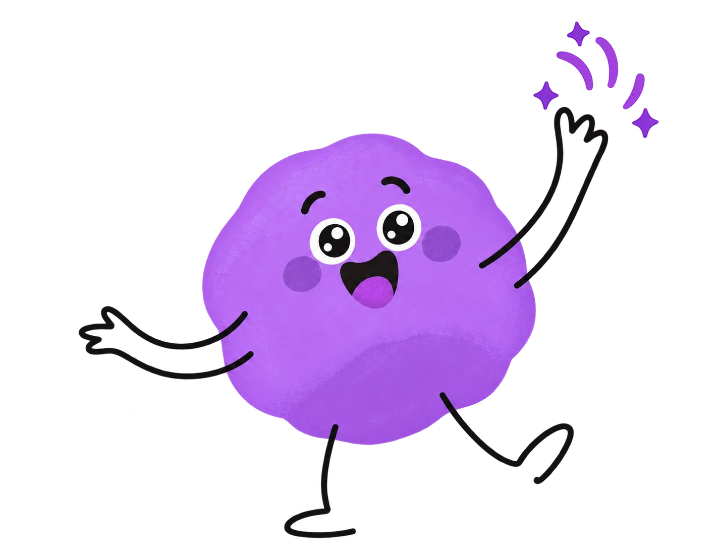
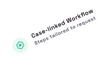

Map Preparation Workflow
What initially looked like a complicated interface turned out to be a deeper workflow problem. Through stakeholder interviews, field observation, support feedback, and process analysis, I found that the product structure no longer reflected the real operational process.
In useStatus
2 monthsDuration
~7 minReading time
Read Full Case Study Protected enterprise study

